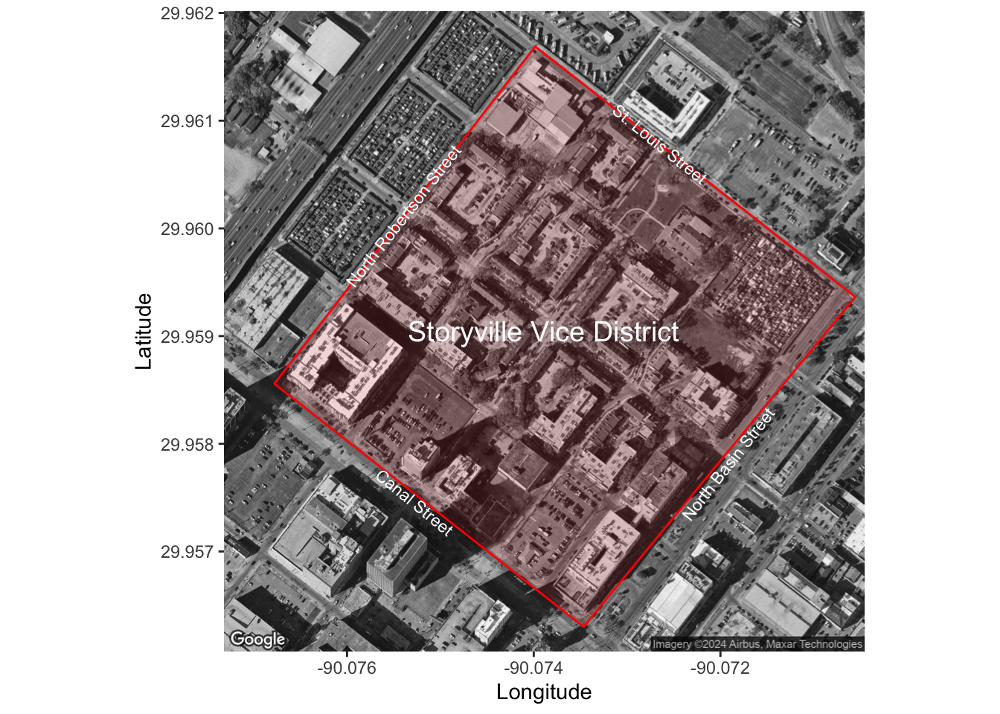
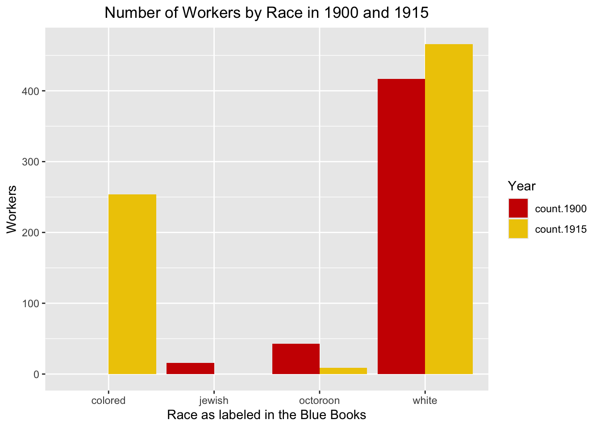
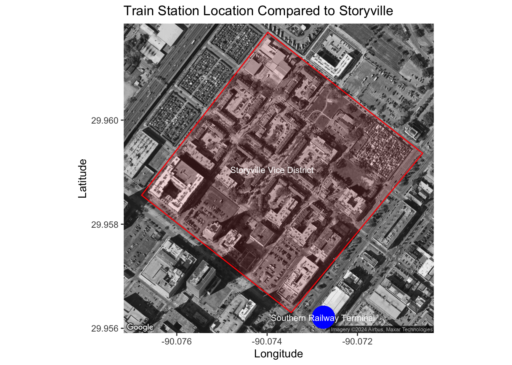
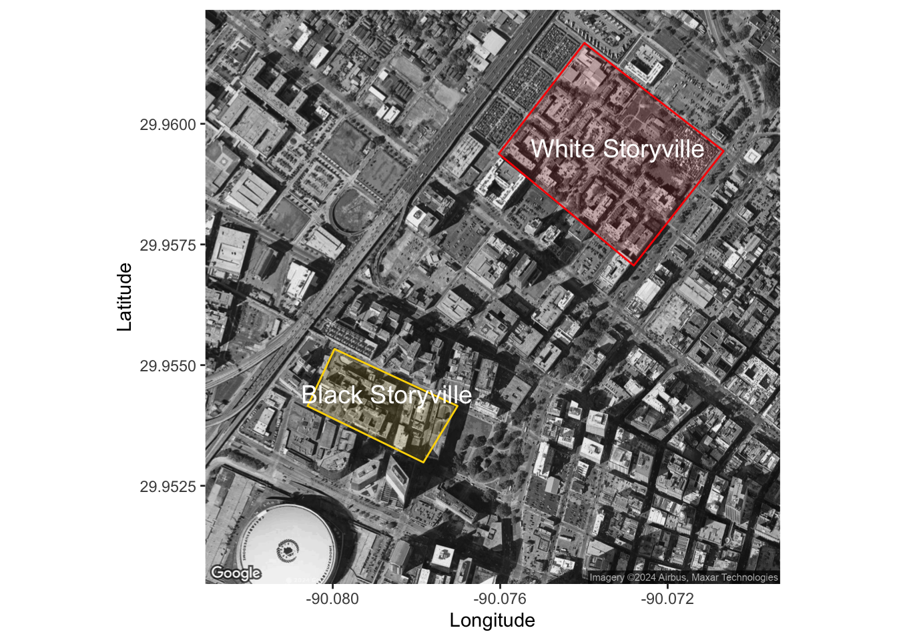
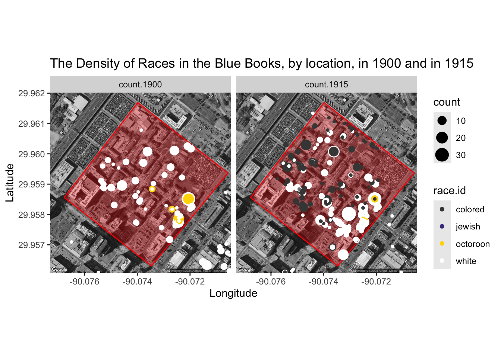

#register google key
register_google(key = Sys.getenv("GOOGLE_KEY"))Storyville.FinalProject
Loading pre-prepped Data CSVs:
#To see the code that geocoded these CSVs, see the dataprep.R file.
people.1900 <- read.csv("CSVs/people.1900.geocoded.csv")
people.1915 <- read.csv("CSVs/people.1915.geocoded.csv")
addresses.1900 <- read.csv("CSVs/addresses.1900.geocoded.csv") %>% rename("people.id"="id.sexworkers") %>% rename("buisiness.name"="buisness.name")
addresses.1915 <- read.csv("CSVs/addresses.1915.geocoded.csv") %>% rename("people.id"="id.sexworkers")
race.id.colors <- c("colored" = "gray25", "white" = "white", "octoroon" = "gold")What this project aims to do is explore two years of data from the Blue Books of Storyville and prove that the legislation created by white slavery reformers and white supremacist legislators affected the way the women of the district were presented, and how they categorized themselves racially within their advertisements.
Context:
Storyville was, and still is a district within New Orleans, Louisiana. Originally, Storyville was created as a red-light district looking to restrict prostitution or the labor of sex work and to a racially and geographically confined, and legalized district of prostitution and other vice. Its establishment was prompted by moral reformer Sidney Story, who ultimately was unhappy with its unofficial name of ‘Storyville’’, as the original name was simply, “The District”. This district holds a rich history and combines multiple intersecting historiographies through the lens of race, gender, and sexuality by involving a multi-faceted historiography.
Sex work within the confines of Storyville holds an incredibly unique vignette of Southern History. Founded on the fantasy and memory of the old antebellum south, Storyville prided itself upon “interracial sex”. Historians of the Old South find the district interesting as the sex workers and brothel owners attempt to perpetuate a fantasy of the old south there, even calling upon the well-known sexual slavery phenomena of “fancy girls” and the auctions of black women during the antebellum south perpetuated through institutional slavery. Explicitly, this interracial sex was a tool used by white men who entered the district to “cross the color line” that was created by Jim Crow South. This is evident in Storyville with the use of “octoroon” as a special racial class, the promoted a unique sexual experience that crossed into exotic in nature, allowing white men who ventured there to pay for sex with someone “across the color line”.1
Historians of Reconstruction and the Post-Civil-War-South can study the situation of Storyville’s legal proceedings, societal customs, and public reactions to the district within their ultimately larger corpus of laws, acts, and instances of Reconstruction political and social events. For example, the white slavery scares and its relationship to sex workers within the US South, and the parallels Southern moral figures drew from institutionalized slavery, sexual slavery, and race. Sexuality and gender historians, and other scholars within that subsection, often use Storyville as a case study to intersect their scholarly interests with racial intersections and southern history and culture, combining the still growing historic ways of thinking.
Geographically, the most widely accepted confines of the district expand in a square between four streets, St Louis, North Robertson, Canal, and North Basin. This was located directly west fo the french quarter, as Basin Street was nearly backed completely to the boundaries of the French quarter. The streets within the district have changed name over the years, but the four streets prompting the outline of the district has remained generally the same as it was produced in 1897, and as the district was disbanded in 1917. Franklin street at the time, is now considered Crozat Street, Customhouse Street changed names during the district’s business-period into Iberville Street, and Gasquettte street later became Cleveland Avenue. These three streets are located within the confines of the district as displayed below.23
Storyville’s boundaries were heavily influence by race, and racial stereotypes. The categorization of black people being sexually immoral was incredibly guiding in the “city’s choice for boundaries in the new district”.4 The neighborhood that Storyville was directly bordering was called a “bad neighborhood”, according to the four men that drew the geographic lines of the district. This “bad neighborhood”, that would not be disrupted by vice was simply a neighborhood filled with black men, women and children and the schools., jobs and churches they attended every day. Those four men felt that “the least harm” could be done to a black neighborhood, rather than a white one.5 Other red-light districts that restricted sex work and sex workers were founded within the same historical window as Storyville, mostly as a response to moral reformers and their expectation to segregate vice from non-vice areas within the United States of America. None, however, reach as for back into the historical and popular memory of its housing city and state as Storyville does, nor do they have the unique sexual practices and precedent as Storyville is equated to.
#creating static maps
#mapstatic
#Center Coordinates <- 29.960301,-90.074095
centerofSV <- c(lon = -90.073891, lat = 29.95905) #creating the static map
staticSV <- get_map(location = centerofSV, zoom = 17, maptype = "satellite", color = "bw")
#lonlat of all corners of Stroyville Vice District
#Bottom left <- Corner of Canal St. and N. Robertson St. <- 29.958558,-90.076779
#Top left <- Corner of N. Robertson and St. Louis St. <- 29.961689,-90.073984
#Top Right <- Corner of St. Louis Street and N. basin St. <- 29.959363,-90.070555
#Bottom Right <- Corner of N. basin St and Canal St. <- 29.956301,-90.073466
longitudeSV <- c(-90.076779,-90.073984, -90.070555, -90.073466) #longitude of my polygon from above
latitudeSV <- c(29.958558, 29.961689, 29.959363, 29.956301) #latitude of my polygon from above
lonlatSV <- as.data.frame(cbind(longitudeSV,latitudeSV)) #creating a dataframe for my polygon
SVwithlabels <- ggmap(staticSV) + #load static map at zoom 17
geom_polygon(data = lonlatSV, aes(x=longitudeSV, y=latitudeSV),alpha = 0.1, color = "red", fill = "red") + # add the polygon on top of static map
annotate("text", x=-90.073891,y=29.95905,label="Storyville Vice District", color="white", size=5) + #label the district
annotate("text", x=-90.072649,y=29.960785,label="St. Louis Street", color="white", size=3, angle = -39) +
annotate("text", x=-90.075394,y=29.960117,label="North Robertson Street", color="white", size=3, angle = 52) +
annotate("text", x=-90.075277,y=29.95746,label="Canal Street", color="white", size=3, angle = -39) +
annotate("text", x=-90.071914,y=29.957815,label="North Basin Street", color="white", size=3, angle = 52) + #annotate the street names and adjust their angle
labs(x = "Longitude", y = "Latitude") #add X/Y axis labels
SVwithlabels
After the establishment of Storyville, the district conducted sex work in an incredibly prosperous business model. However, despite the district’s isolation from those not involved with sex work, its geography inside the district were still challenged by those involved within progressive era moral reform movements. Most specifically, the White Slavery fear, as it was colloquially called, had heavy influence on the district, and ultimately led to its end in 1917.
Blue Books in Storyville were printed and published directories of businesses and sex workers handed out to the sporting men who frequented the district. They would use these books as guides to decide where, and who, they wanted to visit during their time there. The books are partly dedicated to the liquor, cigar and good ads targeted at sporting men, and then divided into two main categories, directory, and locations. The directory houses all the names of legal sex workers active in the district are all identified by race/color, full name, and street address to know where they can be accessed for their services by the men visiting the area. The locations are sometimes listed by name of brothel, like the Arlington, or by the name of the Madame who owns the business or simply by street address if there is no brothel who claims the sex worker via purchased ads by brothel owners/madams.6
This district was founded on the concept of race, and ultimately, it was the concept of race and colorism that prompted the closure of Storyville twenty years after its opening, which is shown through the natural segregation that district shows geographically, and the skew of ads purchased within the books by white workers and madams over workers and madams of color.
White Slavery Scare Reconstruction Context:
After the establishment of Storyville, the district conducted sex work in an incredibly prosperous business model. However, despite the district’s isolation from those not involved with sex work, its geography inside the district were still challenged by those involved within progressive era moral reform movements. Most specifically, the White Slavery fear, as it was colloquially called, had heavy influence on the district, and ultimately led to its end in 1917. The white slavery scare takes different identities, depending on where it took hold, and social influences. In Europe, this reform movement was much more heavily based on sex workers, and specifically, sex trafficking in regards to morally refined women. This led to the suppression of sex work in Europe through the sensationalized news stories of children being sold to “white slave traders”. 7
In the United States, however, the terminology of white slavery took another facet. Immigration’s influence is shown through laws prohibiting the “import fo women and girls for ‘any other moral purpose’ including prostitution”.8 Arguably, the most contrasting facet of the United State’s white slavery scare as compared to Europe is the underlying social parameters of race within the united states, specifically referring to African Americans and women and men of color. Jessica R. Piley’s book’s, Policing Sexuality: the Mann Act and the Making of the FBI, first chapter is titled “the American Myth of White Slavery” and consistently makes the argument that white slavery panic and reform movement within the United States took on a different face and was inherently influenced by previous societal values. It was obvious to those of this time its ties to the trans-Atlantic slave trade, actively “invoking images” and the language of slavery abolition activists from the pre-Civil War periods and tying their white slavery reformation narratives together. 9
Despite this reform movement, and the so-called abolition of white slavery through legislation and moral high ground, there was an intense difference in the way white sex workers and black sex workers were treated. Siobhan Brooks thoroughly explains this dichotomy between white sex workers and black sex workers and their relationship with the white slavery scare reform movements as they developed. In her article titled “Innocent White Victims and Fallen Black Girls: Race, Sex Work, and the Limits of Anti–Sex Trafficking Laws.”, she lays out how this treatment of sex workers at the height of the white slavery panic is still obvious in today’s political developments around sex work. She explains that the American reformers of the progressive era showed obvious “oversight” in the use of the language “sexual slavery” and “white slavery”. She explains how harmful it was to overlook the horrors of chattel and breeding slavery evident in the American Old South, and how black women were set as economic commodities during the institution of black slavery in America, and then white women were set in the same context.10
It’s obvious, in the talk of reformers during this time period that black women were considered perpetrators of prostitution, and white women were considered the innocent victim of the labor of sex work. Moral reformers of this period, specifically women reformers simply “decried ‘white slavery’ while denouncing the visibility of ‘negro’ prostitutes” as a whole.11 This is even exemplified through the attempt of female moral reformers through the establishment of the Era Clubs, who fought for white women’s advancement, but almost exclusively excluded black women from their ranks and the reform attempts.12 In one of the Era Clubs, there was a movement to stop the use of public transportation, specifically the train that lead into Storyville by white women in the surrounding area as many believed this was a hot spot for recruitment of sex workers and the eventual selling into the so-called “white slavery”.13
Race and its factor in Storyville:
Storyville’s marketability was much different from other vice districts in the United State during the turn of the twentieth century. there were, of course, other vice districts where white men could go to procure sex with a woman of color, however, none marketed themselves like Storyville did. Madams like Willie Piazza and Lulu White themselves were considered “octoroons” or “quadroons” and played into the social and sexual stereotypes that came along with being a woman of white and black descent. These businesswomen, and the businessmen behind the scenes in some cases were able to market women identifying as octoroons “Storyville’s main attraction”.14 It was the scarcity of women within this skin-color identification that made their trade, and sex with them so profitable and intensely sought after worker within the district. So sought after, that if they were to leave Storyville to become a sex worker in another vice district, they would actively promote their ties to Storyville, or to creole ancestry. The women within this category were synonymous with the pleasure business of Storyville and became almost unofficial mascots of the vice district.15
Despite this specific marketing and reputation created by Storyville business owners, the paid ads and paid listings of sex-workers within the blue books skewed heavily towards white business owners and white sex workers. Specifically, in the 1900 “400 Tenderloin” did not even have sex workers classified as “colored” listed at all, but those classified as “octoroon” and “white” by the books are heavily displayed. by 1915, however, those classified as “octoroon” were outweighed by those workers classified as “colored” by over 100%.
race.1900 <- people.1900 %>%
group_by(race.id) %>% #group people.1900 by race
filter(race.id != "") %>% #filterout NA and " " values
summarise(count.1900=n()) #count each occurance of race
race.1915 <- people.1915 %>%
group_by(race.id) %>% #group people.1915 by race
filter(race.id != "") %>% #filterout NA and " " values
summarise(count.1915 = n()) #count each occurance of race
by.race <- full_join(race.1900, race.1915) #join the two subsetted race dataframe together
by.race.long <- pivot_longer(by.race, cols = starts_with("count"), names_to = "year", values_to = "count") #lengten the data to create a double bar graph that shows each occurance by year
racebarchart <- ggplot(by.race.long, aes(factor(race.id), count, fill = year)) +
geom_col(position = "dodge", na.rm = FALSE) +
labs( x = "Race as labeled in the Blue Books", y = "Workers", title = "Number of Workers by Race in 1900 and 1915", Fill = "Year") +
theme(plot.title = element_text(hjust = 0.5)) +
scale_fill_manual(values = c("count.1900" = "red3", "count.1915" = "gold2"), name = "Year")
racebarchart
“Octoroon” Commodity:
Storyville played upon the old southern memory of the economic, and sexual commodity, of black women. Specifically, Storyville merchandised women of mixed black and white racial heritage. Black women of the Old Antebellum South, specifically lack women who were also partially white were considered economic commodities for two reasons, their consideration as “breeding” or “breeded” slaves, as slavery was a maternal matter within US slavery and the phenomena of “fancy girls”.
“Fancy girls”, and the whole ideology surrounding them, are heavily saturated in the sexualization of slavery, particularly referring to the sexualization of women of mixed-race between white and black. The name “fancy-girl” inherently came from the auction in which these black women were sold for the specific purpose of sex with the enslaver that bought them, as well as their skin tone, which was often appearing as more white than black.16 Legally, only “black women” could be sold as a slave, or a sex-slave within this particular case, but oftentimes these women were visually “whiter” than the other slaves within the entirety of slave auctions. This was simply a racial fetishization, according to Brenda E. Stevenson, historian and author of “Life in Black and White: Family and Community in the Slave Society”, “What, after all, could be more valuable than a woman of ‘white’ complexion who could be bought as one’s private ‘sex slave’?”.17
The sexualization and commodification of the “mulatto woman” came almost directly from the economic impacts that a mixed-race child from a black mother could have on the enslaver and their assets. 18 This can be shown through the breeding of black slaves with a white counterpart, mostly the white male enslaver after Congress of the United States outlawed the international slave trade in 1808. Because Slavery within the US was maternal in nature, the only way for enslavers to expand their slave pool after the outlaw of the slave trade was for women that were enslaved to give birth under their “ownership”.19
The importance of the octoroon as a “commodity” can be shown through the density of octoroon locations next to the train station, that most sporting gentlemen rode to enter Storyville. This station was not established until 1908, but the choice for the station to lead to the busiest area of the district.
#bottom left 29.956104,-90.073112
#top left 29.956459,-90.072821
#top right 29.956205,-90.072459
#bottom right 29.955948,-90.072702
#center coords 29.958887,-90.073748
lat <- 29.956213
lon <- -90.072753
train <- data.frame(lon, lat)
train <- as.data.frame(c(-90.072753, 29.956213), ncol = 2, byrow = TRUE)
center.train <- c(lon = -90.073748, lat = 29.958887 )
longitudetrain <- c(-90.073112, -90.072821, -90.072459, -90.072702) #longitude for the polygon
latitudetrain <- c(29.956104,29.956459,29.956205,29.9562044) #latitude for the polygon
lonlattrain <- as.data.frame(cbind(longitudetrain,latitudetrain))
statictrain <- get_map(location = center.train, zoom = 17, maptype = "satellite", color = "bw")
#create dataframe for the polygon
SVwithTrainStation <- ggmap(statictrain) + #load static map at zoom 16
geom_polygon(data = lonlatSV, aes(x=longitudeSV, y=latitudeSV),alpha = 0.1, color = "red", fill = "red") + # add the polygon on top of static map
annotate("text", x=-90.073891,y=29.95905,label="Storyville Vice District",color="white",size=3) + #label the district
geom_point(data = train, color="blue",size=10) +
annotate("text", x=-90.072763,y=29.956204,label="Southern Railway Terminal",color="white",size=3) +
labs(x = "Longitude", y = "Latitude", title = "Train Station Location Compared to Storyville")
SVwithTrainStation
White Slavery and White Supremacist Legislation:
The legislative influence that the white slavery fear reformers and other moral reformers had on Storyville and other vice district all over the US was astronomical. In the case of Storyville, New Orleans specifically, there were 4 legislative acts that were monumental in the closing of Storyville as a vice district in 1917. Starting in 1907, Act 87 of Louisiana House Bill No. 4 is also, most obviously focuses on race and the mixing of races. This iteration of segregating reform laws passed in Louisiana criminalizes the cohabitation between two individuals of different races, specifically “a person of the Caucasian or white race and a person of the negro or black race”. Not only was this a statute expected to be followed by the citizens of Louisiana, but this crime was also classified as a felony. Those held within violation of Act 87 were to be held in front of a grand jury by the judge. The penalty for breaking this law, and being found guilty of the crime was “not less than one month nor more than one year” held within a state penitentiary.20 This language used to describe the difference between white and black people, otherwise known as the color line, only cut deeper into the practices Storyville had been upholding for a decade.
There were cases of contest against this law, and ultimately led to an interesting precedent in regard to its meaning. In a supreme court case of State v. Octave Treadway and Josephine Treadway the color line is shifted and created a very harsh line between “negro” and “octoroon”, “quadroon”, and “mullatoe”. The court stated again, doubling down on their ruling that “there are no negroes who are not persons of color, but there are persons of color, who are not negroes”. The Supreme court of Louisiana, in a vote 3-2 held that this law would only be held to fully black individuals, and fully white individuals.21 Despite this being a general positive, those of mixed-race skin one were able to continue cohabitating in the same premise as white individuals, the district of Storyville still experienced an intense shift of racial segregation by 1915, whether it was fully considered illegal or not.
Finally, in 1917, as the near final blow to the red-light-district of Storyville the New Orleans City Ordinance 4118 on February 7, 1917, very similar to the Act of 87 in 1907, but more restrictive in the living standard down to the geographic and spatial level, not just the individual housing unit. This ordinance attempted, and did legally, segregate Storyville, by racial district. Instead of allowing sex workers, madams, and any other employees of the district to live within the same areas or streets, they now could not live within the same mapped out district as any other race, along the same race line that was set excluding mixed-race individuals. Dividing the district by race, and completely segregating white and black individuals within the vice district was directly contradictory to the fantasy of interracial sex that was cultivated in Storyville in 1898. Essentially, this city-wide ordinance divided Storyville two-fold, creating a “black Storyville” and a “white Storyville”, destroying its interracial fantasy in its entirety.22 While there is no data available for the location of sex workers and madams of different races within the district in 1917, the figure below shows the difference in racial density of sex workers and madams as they are listed within the Storyville Blue Books in 1900 and 1915.
#creating the BSV and WSV coordinates and labels
#black storyville coords: using the city ordinance 4118 to create my data.
#bottom left:29.954152,-90.080601
#top left: 29.955334,-90.079958
#top right:29.954153,-90.077019
#bottom right: 29.952984,-90.077834
#center for both 29.956423,-90.07619
longitudeBSV <- c(-90.080601, -90.079958, -90.077019, -90.077834) #longitude for the polygon
latitudeBSV <- c(29.954152,29.955334,29.954153,29.952984) #latitude for the polygon
lonlatBSV <- as.data.frame(cbind(longitudeBSV,latitudeBSV)) #create dataframe for the polygon
#white storyville coords
#bottom left:29.959378,-90.076034
#top left: 29.961675,-90.073988
#top right:29.959434,-90.070663
#bottom right:29.957063,-90.072809
#center of WSV: 29.958675,-90.073182
longitudeWSV <- c(-90.076034, -90.073988, -90.070663,-90.072809)
latitudeWSV <- c(29.959378, 29.961675,29.959434,29.957063)
lonlatWSV <- as.data.frame(cbind(longitudeWSV,latitudeWSV))
#start creating the static map for this visualization
centerofBSVandWSV <- c(lon = -90.07619, lat =29.956423) #find the center for a new statis map
BSVandWSVstatic <- get_map(location = centerofBSVandWSV, zoom = 16, maptype = "satellite", color = "bw") #create static map
BSVlabeled <- ggmap(BSVandWSVstatic) + #load static map at zoom 16
geom_polygon(data = lonlatBSV, aes(x=longitudeBSV, y=latitudeBSV),alpha = 0.1, color = "gold", fill = "gold") + # add the BSV polygon on top of static map
annotate("text", x=-90.078700 ,y=29.954400,label="Black Storyville",colour="white",size=5) + #label the black storyville
geom_polygon(data = lonlatWSV, aes(x=longitudeWSV, y=latitudeWSV),alpha = 0.1, color = "red", fill = "red") + #Add the SV polygon to the static map
annotate("text", x=-90.073182,y=29.95950,label="White Storyville",colour="white",size=5) + #label the SV district
labs(x = "Longitude", y = "Latitude")
BSVlabeled
The specific confines of “Black Storyville”, where only black workers were allowed to reside, were as written: inside of the “following limits…from the upper side of Perdido street to the lower side of Gravier street, and from the river side of Franklin street to the lower wood side of Locust street”.23
The specific confines for white Storyville were as written: inside of the “following limits… from the south side of Customhouse (now Iberville) street to the north side of St Louis street, and from the lower or wood side of North Basin Street to the lower or wood side of Robertson Street”.24
As shown above, this proposed city ordinance, that Storyville did not live long enough to see through was incredibly impractical. Two years earlier the district held smaller confines, yet was still segregated by color on grounds of living within the same house ro apartment, this was due to the Act 87. While there was obvious overlap, where sex workers of white and black did still did live together come 1915, this does not discredit that there was a trend of social segregation already within the districts. this can also be shown int he way that only certain people bought places within the Storyville directory, as ads for themselves as sex workers or as ads for their brothels and businesses.
geo.race.1900 <- people.1900 %>% #filter in the people.1900 csv file
group_by(lat,lon,race.id) %>% #group by latitude and longitude to find density of race at each location
summarise(count.1900 = n()) #count to find find density at a location, by race
geo.race.1915 <- people.1915 %>% #filter in the people.1915 file
group_by(lat,lon,race.id) %>% #group by latitude and longitude to find density of race at each location
summarise(count.1915 =n()) #count to find density at a location, by race
geo.race <- full_join(geo.race.1900, geo.race.1915) #join both together to plot together
geo.race.long <- pivot_longer(geo.race, cols = starts_with("count"), names_to = "year", values_to = "count") %>% #ensure that the data is readable for a feceted plot
arrange(desc(count)) #ensure that the data points with less density appear on top of data points with higher density to read the plot clearly
density.map <- ggmap(staticSV) + geom_polygon(data = lonlatSV, aes(x=longitudeSV, y=latitudeSV),alpha = 0.3, color = "red", fill = "red") +
geom_point(data = geo.race.long, mapping = aes(x=lon, y=lat, size=count, color=race.id)) +
scale_color_manual(values = c("white" = "white","colored"="gray27","octoroon"="gold","NA"= "transparent", "jewish" = "darkslateblue")) +
facet_wrap("year") +
labs(x = "Longitude", y = "Latitude", title = "The Density of Races in the Blue Books, by location, in 1900 and in 1915")
density.map
Conclusions:
The Blue Books of Storyville were examples of those of the district that were able to pay for their place within them, so while exemplary of the district in certain ways, it does not fully represent the districts as a whole. However, the district evolved according to the values of these directory holders, until the intervention of progressive reformers that were against the institution of sex work as a whole. While the district was built on the commodification of women of color, and of interracial sex, the racial tensions o the time period ultimately led to its demise. Despite there an incredibly diverse population within the district, the white people fo the district heavily outweigh those of color. The elusive and popular “octoroon” was underrepresented in the guides, due to their inherent popularity they didn’t need to adverstise themselves (as sex workers in particular), just the places they could be located (the named businesses). The district stuck itself into an almost natural segregation, yet the legislation prompting segregation within the district led to its end in 1917 with City Ordinance 4118, and eventually the start of World War II.
This data is important, tot the historical and societal understanding of Storyville as well as the historical understanding of the intersection of race, gender, and sexuality within the American South. In the future, I’d like this data, and this project, to evolve past the point of solely 1900 and 1915, at the moment, I have access to the 1901, 1903, 1905, 1906, 1908, 1909 and 1912 versions of the books. After a trip to The Historic New Orleans Collective over the summer, I should have at least 4 more years worth of data to explore, map, and create a shiny app revolving around the businesses, women, madams, and other pertinent information to eventually morph into my thesis.
Interactive Leaflet of Names Businesses:
Below is an interactive map categorized by businesses and years, this shows specifically the buisineses name, those employed by the business, and racial identification of the business, as they are listed in the books. Taking direct influence from the Mapping the Gay guides Project, I’d like to see this be built in Shiny with filtering parameters showing the locations, the race.ids and the different years in a more interactive format.
buisiness.1915 <- left_join(addresses.1915, people.1915, by = "address.id") %>%
group_by(full.address.y) %>% # Group by the full address
mutate(all.names = paste(first.name, last.name, sep=" ", collapse=", ")) %>%
distinct(street.address.y, .keep_all = TRUE) %>%
rename("lat" = "lat.x") %>%
rename ("lon" = "lon.x") %>%
filter(!is.na(buisiness.name) & trimws(buisiness.name) != "") #filter out NA values AND any length of string that is not numbers or letters,just blank space. Specifically, I only want locations listed as ads wihtin the blue books.
buisiness.1900 <- left_join(addresses.1900, people.1900, by = "address.id") %>%
group_by(full.address.y) %>% # Group by the full address
mutate(all.names = paste(first.name, last.name, sep=" ", collapse=", ")) %>%
distinct(street.address.y, .keep_all = TRUE) %>%
rename("lat" = "lat.x") %>%
rename ("lon" = "lon.x") %>%
filter(!is.na(buisiness.name) & trimws(buisiness.name) != "") #filter out NA values AND any length of string that is not numbers or letters,just blank space. Specifically, I only want locations listed as ads within the blue books.
SVpolygon <- matrix(c(-90.076779, 29.958558, -90.073984, 29.961689, -90.070555, 29.959363, -90.073466, 29.956301, -90.076779, 29.958558), ncol = 2, byrow = TRUE)
icon.1900 <- makeIcon(iconUrl = "icons/black.icon.png", iconWidth = 24, iconHeight = 24)
icon.1915 <- makeIcon(iconUrl = "icons/blue.icon.png", iconWidth = 24, iconHeight = 24)
interactive.leaflet <- leaflet() %>%
addProviderTiles("Stadia.StamenTonerLite") %>%
addPolygons(lng = SVpolygon[,1], lat = SVpolygon[,2], color = "red", weight = 2, fillColor = "red", fillOpacity = 0.3) %>%
addMarkers(data=buisiness.1915, ~lon, ~lat, icon = icon.1915, popup = paste(
"<b>This business is named:</b> ", buisiness.1915$buisiness.name, "in 1915.",
"<br><b>The workers employed here are listed as:</b> ", buisiness.1915$all.names,
"<br><b> The races of the employed are listed as:</b> ", buisiness.1915$race.id.y,
sep = ""), group = "1915") %>%
addMarkers(data=buisiness.1900, ~lon, ~lat, icon = icon.1900, popup = paste(
"<b>This business is named:</b> ", buisiness.1900$buisiness.name, "in 1900.",
"<br><b>The workers employed here are listed as:</b> ", buisiness.1900$all.names,
"<br><b> The races of the employed are listed as:</b> ", buisiness.1900$race.id.y,
sep = ""), group = "1900") %>%
addLayersControl(
overlayGroups = c("1900", "1915"),
options = layersControlOptions(collapsed = FALSE)
)
interactive.leafletFootnotes
Emily Epstein Landau, Spectacular Wickedness: Sex, Race, and Memory in Storyville, New Orleans (Baton Rouge: Louisiana State University Press, 2013), 109.↩︎
Platt, R. Eric, and Lilian H. Hill. “A Storyville Education: Spatial Practices and the Learned Sex Trade in the City That Care Forgot: Adult Education Quarterly.” Adult Education Quarterly 64, no. 4 (November 2014): 285–305. https://doi.org/10.1177/0741713614539030.↩︎
Arceneaux, Pamela D. “Guidebooks to Sin: The Blue Books of Storyville.” Louisiana History: The Journal of the Louisiana Historical Association 28, no. 4 (1987): 397–405.↩︎
ia P. Long, The Great Southern Babylon: Sex, Race, and Respectability in New Orleans, 1865-1920, Louisiana pbk. ed. (Baton Rouge: Louisiana State University Press, 2005), 130.↩︎
Alecia P. Long, The Great Southern Babylon: Sex, Race, and Respectability in New Orleans, 1865-1920, Louisiana pbk. ed. (Baton Rouge: Louisiana State University Press, 2005), 131-132.↩︎
Blue Book. (Between 1913-1915), Collection No. ocn244345325, The Historic New Orleans Collective, https://catalog.hnoc.org/web/arena/search#/entity/thnoc-archive/4586/blue-book.↩︎
Jo Doezema, “Loose Women or Lost Women? The Re-Emergence of the Myth of White Slavery in Contemporary Discourses of Trafficking in Women: Gender Issues,” Gender Issues 18, no. 1 (Winter 2000): 28.↩︎
Ann Wagner and Rachel Wagley Mccann, “Prostitutes or Prey? The Evolution of Congressional Intent in Combating Sex Trafficking: Harvard Journal on Legislation,” Harvard Journal on Legislation 54, no. 1 (January 2017): 722.↩︎
Jessica R. Pliley, Policing Sexuality: The Mann Act and the Making of the FBI (Cambridge, MA: Harvard University Press, 2014), 15–20, https://doi.org/10.4159/harvard.9780674736115.↩︎
Siobhan Brooks, “Innocent White Victims and Fallen Black Girls: Race, Sex Work, and the Limits of Anti–Sex Trafficking Laws: Signs: Journal of Women in Culture & Society,” Signs: Journal of Women in Culture & Society 46, no. 2 (Winter 2021): 4, https://doi.org/10.1086/710816.↩︎
Landau, Emily Epstein. Spectacular Wickedness: Sex, Race, and Memory in Storyville, New Orleans. Baton Rouge: Louisiana State University Press, 2013. 166.↩︎
The Historic New Orleans Collective. “‘yet She Is Advancing’ - Google Arts & Culture.” “Yes, She is Advancing.” Accessed April 18, 2024. https://artsandculture.google.com/story/yet-she-is-advancing-the-historic-new-orleans-collection/bQUBehOha6v2IA?hl=en.↩︎
Landau, Emily Epstein. Spectacular Wickedness: Sex, Race, and Memory in Storyville, New Orleans. Baton Rouge: Louisiana State University Press, 2013. 167.↩︎
Landau, Emily Epstein. Spectacular Wickedness: Sex, Race, and Memory in Storyville, New Orleans. Baton Rouge: Louisiana State University Press, 2013. 46.↩︎
Long, Alecia P. The Great Southern Babylon: Sex, Race, and Respectability in New Orleans, 1865-1920. Louisiana pbk. ed. Baton Rouge: Louisiana State University Press, 2005. 203.↩︎
Zeena Yasmine Fuleihan, “The Fancy Girl Episteme: Tracking the Legacy of Master-Slave Rape in the Evolution of the Tragic Mulatto Trope.,” The Comparatist 46 (October 1, 2022): 130.↩︎
Davis, Adrienne D. “Slavery and the Roots of Sexual Harassment.” SSRN Scholarly Paper. Rochester, NY, November 1, 2013. https://doi.org/10.2139/ssrn.336122. 460.↩︎
Fuleihan, “The Fancy Girl Episteme”; Adrienne D. Davis, “Slavery and the Roots of Sexual Harassment,” SSRN Scholarly Paper (Rochester, NY, November 1, 2013), https://doi.org/10.2139/ssrn.336122.↩︎
Zeena Yasmine Fuleihan, “The Fancy Girl Episteme: Tracking the Legacy of Master-Slave Rape in the Evolution of the Tragic Mulatto Trope.,” The Comparatist 46 (October 1, 2022): 128.↩︎
Act No. 87, House bill No. 4, Louisiana State Court, https://lasc.libguides.com/ld.php?content_id=29652258. (Accessed April 5, 2024).↩︎
“Concubinage Law Reaches Negro Only”, Lafayette Adviser, April 29, 1910. https://chroniclingamerica.loc.gov/lccn/sn86079068/1910-04-29/ed-1/seq-1/. (Accessed April 18, 2024).↩︎
New Orleans, Louisiana. City Ordinance No. 4118. February 4, 1917. https://www.hnoc.org/virtual/storyville/fighting-racial-segregation.↩︎
New Orleans, Louisiana. City Ordinance No. 4118. February 4, 1917. https://www.hnoc.org/virtual/storyville/fighting-racial-segregation.↩︎
New Orleans, Louisiana. City Ordinance No. 4118. February 4, 1917. https://www.hnoc.org/virtual/storyville/fighting-racial-segregation.↩︎